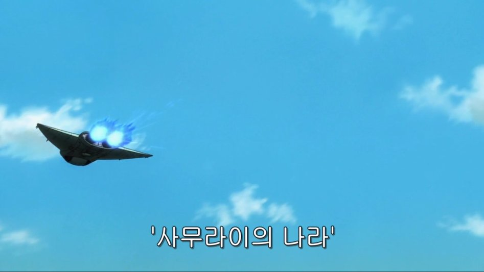

줄거리 설명

사무라이의 나라.
우리의 나라가 그렇게 불리던 것은 지금은 이제는 먼 옛 이야기이다.
20년 전 갑작스럽게 우주에서 내려온 천인의 개항과 폐도령에 의해 사무라이는 쇠퇴의 길을 걷게 된다...
그러나 사무라이 정신을 굳게 간직한 남자가 있었으니 그의 이름은
사카타 긴토키
단것을 좋아하는 저돌적인 이 남자가 부패한 에도를 두동강을 낼지도?!
뒤로가기